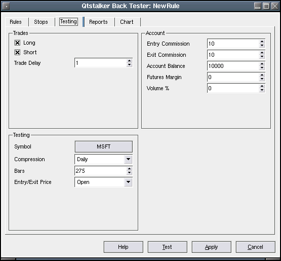

Back Tester Testing
This is where we set the fine details for a test run.

Trades
- Long - Enable/disable long trades.
- Short - Enable/disable short trades.
Date Range
- Start Date - The date to start trading.
- End Date - The date to end trading.
Account
- Entry Commission - The cost of entering a trade.
- Exit Commission - The cost of exiting a trade.
- Account Balance - This is the opening balance of the trading account.
- Futures Margin - The margin used for futures trading, use 0 if not
trading futures.
Symbol
- Symbol - Chart selector dialog for selecting the chart to back test.
Volume
- Account % - The percentage of the account balance to use for applying
to each trade. This determines the volume.
If volume is set to zero, the default volume will be 1.
To perform the test, just press the Perform Test button. Depending on how
big the chart is, this could take a few seconds. Once done, the reports and
charts pages will be updated with the latest results.